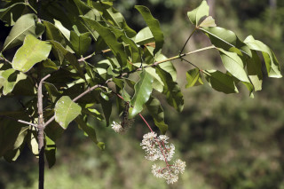
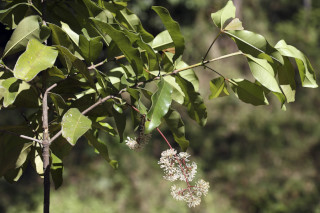
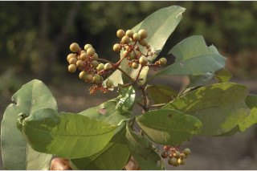
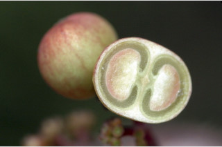
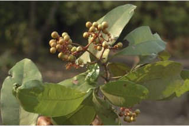
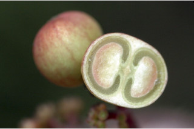

Small trees, up to 7 m tall.
7 ಮೀ ಎತ್ತರದವರೆಗಿನ ಸಣ್ಣ ಗಾದ ಮರಗಳು.
Small trees, up to 7 m tall.
சிறிய மரம் 7 மீ. உயரம் வரை வளரக்கூடியது.
Bark brownish, scaly when mature; blaze pinkish.
ತೊಗಟೆ ಕಂದು ಬಣ್ಣ ಹೊಂದಿದ್ದು ಬಲಿತಾಗ ಚಕ್ಕೆ ರೂಪದಲ್ಲಿರುತ್ತವೆ;ಕಚ್ಚು ಮಾಡಿದ ನಸುಕೆಂಪು ಬಣ್ಣದಲ್ಲಿರುತ್ತದೆ.
Bark brownish, scaly when mature; blaze pinkish.
மரத்தின் பட்டை ப்ரவுன் நிறமானது, முதிரும் போது செதில்களாக உதிருபவை; உள்பட்டை பிங்க் நிறமானது.
Young branchlets quadrangular, glabrous.
ಎಳೆಯ ಕಿರುಕೊಂಬೆಗಳು 4-ಕೋನಗಳ ಸಮೇತವಿರುತ್ತವೆ,ರೋಮರಹಿತವಾಗಿರುತ್ತವೆ.
Young branchlets quadrangular, glabrous.
சிறிய நுனிக்கிளைகள் குறுக்குவெட்டுத் தோற்றத்தில் நான்கு கோணங்களுடையது, உரோமங்களற்றது.
Leaves simple, opposite, decussate; stipule broadly ovate, interpetiolar, to 0.5 cm long, glabrous; petiole 0.4-1.2 cm long, planoconvex in cross section, glabrous; lamina 8-18 x 3.4-6.8 cm, elliptic-oblong to oblanceolate, apex obtuse to subacute, base attenuate to cuneate or acute, margin entire or slightly undulate, coriaceous, glabrous; midrib flat above; secondary_nerves ca. 12 pairs; tertiary broadly reticulate.
ಎಲೆಗಳು ಸರಳವಾಗಿದ್ದು ಕತ್ತರಿಯಾಕಾರದ ಅಭಿಮುಖ ಜೋಡನಾ ವ್ಯವಸ್ಥೆಯಲ್ಲಿರುತ್ತವೆ; ಕಾವಿನೆಲೆಗಳು ವಿಶಾಲಅಂಡದ ಆಕಾರದಲ್ಲಿದ್ದು ತೊಟ್ಟುಗಳ ನಡುವೆ ಇರುತ್ತವೆ,0.5 ಸೆಂ.ಮೀ. ಉದ್ದ ಹೊಂದಿರುತ್ತವೆ ಮತ್ತು ರೋಮರಹಿತವಾಗಿರುತ್ತವೆ; ತೊಟ್ಟು0.4 - 1.2 ಸೆಂ.ಮೀ.ವರೆಗಿನ ಉದ್ದವಿದ್ದು,ಅಡ್ಡ ಸೀಳಿದಾಗ ಸಪಾಟ ಪೀನ ಮಧ್ಯದ ಆಕಾರ ಹೊಂದಿರುತ್ತದೆ ಮತ್ತು ರೋಮರಹಿತವಾಗಿರುತ್ತದೆ;ಪತ್ರಗಳು 8-18 X 3.4 –6.8 ಸೆಂ.ಮೀ. ಗಾತ್ರ, ಅಂಡವೃತ್ತ-ಚತುರಸ್ರದಿಂದ ಬುಗುರಿ-ಭರ್ಜಿಯವರೆಗಿನ ಆಕಾರ ಹೊಂದಿದ್ದು, ಚೂಪಲ್ಲದುದರಿಂದ ಉಪ-ಚೂಪಾದವರೆಗಿನ ತುದಿ, ಒಳಬಾಗಿದ ಮಾದರಿಯಿಂದ ಬೆಣೆಯಾಕಾರದ ಅಥವಾ ಚೂಪಾದ ಮಾದರಿವರೆಗಿನ ಬುಡ, ನಯವಾದ ಅಥವಾ ಸ್ವಲ್ಪ ಮಟ್ಟಿಗೆ ತರಂಗಿತವಾದಅಂಚು, ತೊಗಲನ್ನೋಲುವ ಮೇಲ್ಮೈ ಹೊಂದಿದ್ದು ರೋಮರಹಿತವಾಗಿರುತ್ತವೆ; ಮಧ್ಯನಾಳ ಪತ್ರದ ಮೇಲ್ಭಾಗದಲ್ಲಿ ಚಪ್ಪಟೆಯಾಗಿರುತ್ತದೆ; ಎರಡನೇ ದರ್ಜೆಯ ನಾಳಗಳು ಅಂದಾಜು 12 ಜೋಡಿಗಳಿರುತ್ತವೆ; ಮೂರನೇ ದರ್ಜೆಯ ನಾಳಗಳು ವಿಶಾಲ ಜಾಲಬಂಧ ನಾಳ ವಿನ್ಯಾಸದವು.
Leaves simple, opposite, decussate; stipule broadly ovate, interpetiolar, to 0.5 cm long, glabrous; petiole 0.4-1.2 cm long, planoconvex in cross section, glabrous; lamina 8-18 x 3.4-6.8 cm, elliptic-oblong to oblanceolate, apex obtuse to subacute, base attenuate to cuneate or acute, margin entire or slightly undulate, coriaceous, glabrous; midrib flat above; secondary_nerves ca. 12 pairs; tertiary broadly reticulate.
இலைகள் தனித்தவை, எதிரடுக்கமானவை, குறுக்குமறுக்கானவை; இலையடிச்செதில் அகன்ற முட்டை வடிவானது, இலையடிச்செதில் இருஇலைக்காம்பிற்கு நடுவே (இண்டர்பீட்டியோலார்) உடையது, 0.5 செ.மீ. நீளமானது, உரோமங்களற்றது; இலைக்காம்பு 0.4-1.2 செ.மீ. நீளமானது, குறுக்குவெட்டுத் தோற்றத்தில் பிளேனோகான்வக்ஸ், உரோமங்களற்றது; இலை அலகு 8-18 X 3.4-6.8 செ.மீ., நீள்வட்டம்-நீள்சதுர வடிவானது முதல் தலைகீழ் ஈட்டி வடிவானது, அலகின் நுனி மெட்டையானது முதல் கூரியது, அலகின் தளம் அட்டனுவேட் முதல் ஆப்பு வடிவானது அல்லது கூரியது, அலகின் விளிம்பு முழுமையானது அல்லது சிறிது அலை போன்றது, கோரியேசியஸ், உரோமங்களற்றது; மையநரம்பு மேற்புறத்தில் அலகின் பரப்பிற்கு சமமானது; இரண்டாம் நிலை நரம்புகள் 12 ஜோடிகள்; மூன்றாம் நிலை நரம்புகள் அகன்ற வலைப்பின்னல் போன்றவை.
Inflorescence panicled cyme, terminal; flowers small, sessile, white, fragrant.
ಪುಷ್ಪಮಂಜರಿಗಳು ತುದಿಯಲ್ಲಿನ ಪುನರಾವೃತ್ತಿಯಾಗಿ ಕವಲೊಡೆಯುವ ಮಧ್ಯಾರಂಭಿ ಮಾದರಿಯವು;ಹೂಗಳು ತೊಟ್ಟುರಹಿತವಾಗಿದ್ದು,ಬಿಳಿ ಬಣ್ಣ ಹೊಂದಿದ್ದು ಸುವಾಸನಾಯುಕ್ತವಾಗಿರುತ್ತವೆ.
Inflorescence panicled cyme, terminal; flowers small, sessile, white, fragrant.
மஞ்சரி பேனிக்கிள் சைம் வகை மஞ்சரி, தண்டின் நுனியில் காணப்படும்; மலர்கள் சிறியவை, காம்பற்றது, வெள்ளை நிறமானது, மணமிக்கது.
Berry, globose, 0.6 cm long, reddish when ripe; seeds 2.
ಬೆರ್ರಿಗಳು ಗೋಳದ ಆಕಾರ ಹೊಂದಿದ್ದು,0.6 ಸೆಂ.ಮೀ. ಅಡ್ಡಗಲತೆ ಹೊಂದಿದ್ದು,ಕಳಿತಾಗ ಕೆಂಪು ಛಾಯೆಯನ್ನು ಹೊಂದಿರುತ್ತವೆ ;ಬೀಜಗಳ ಸಂಖ್ಯೆ 2.
Berry, globose, 0.6 cm long, reddish when ripe; seeds 2.
முழுச்சதைகனி (பெர்ரி), கோள வடிவமானது, 0.6 செ.மீ. நீளமானது, கனியும் போது சிவப்பு நிறமானது; விதைகள் 2.


 



 


